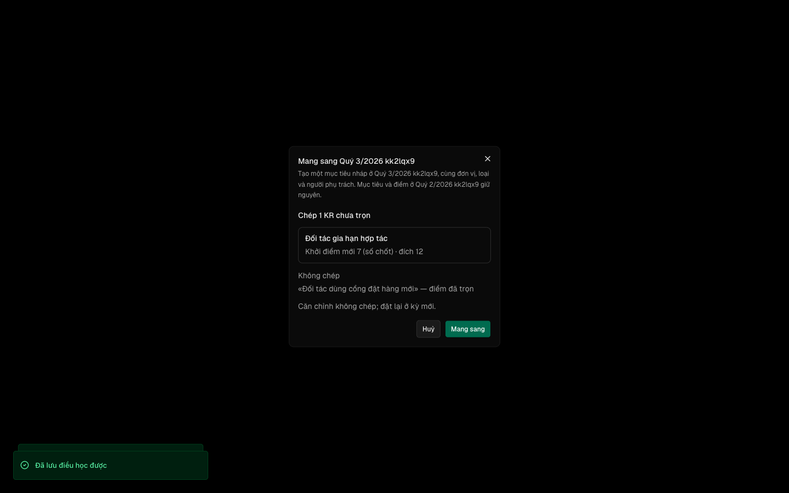
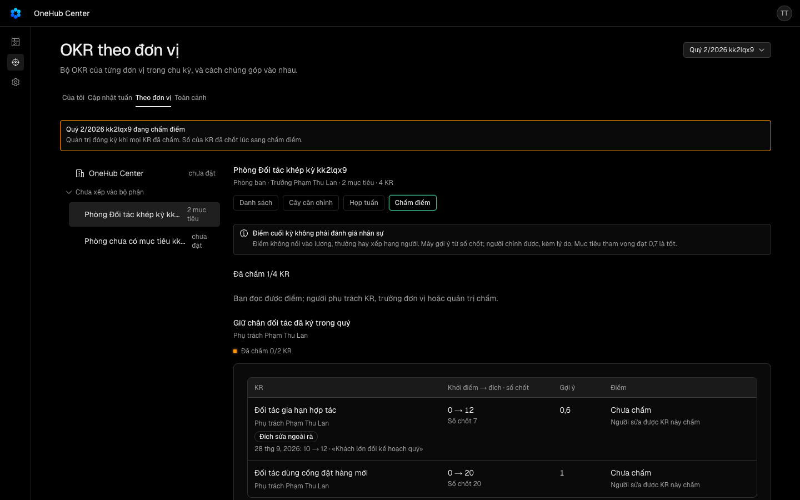
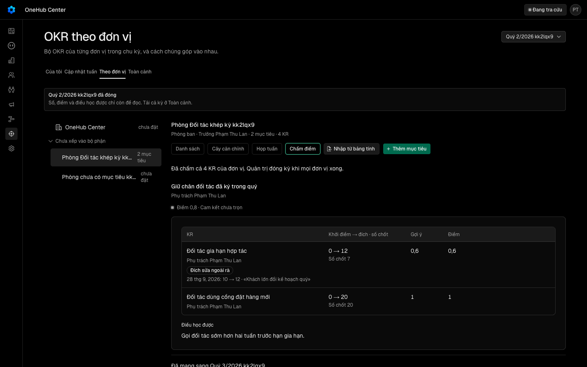
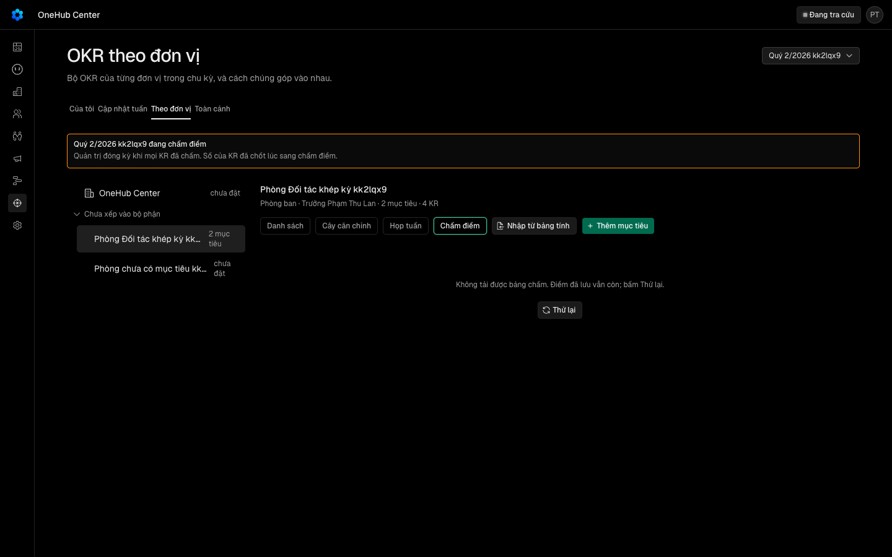
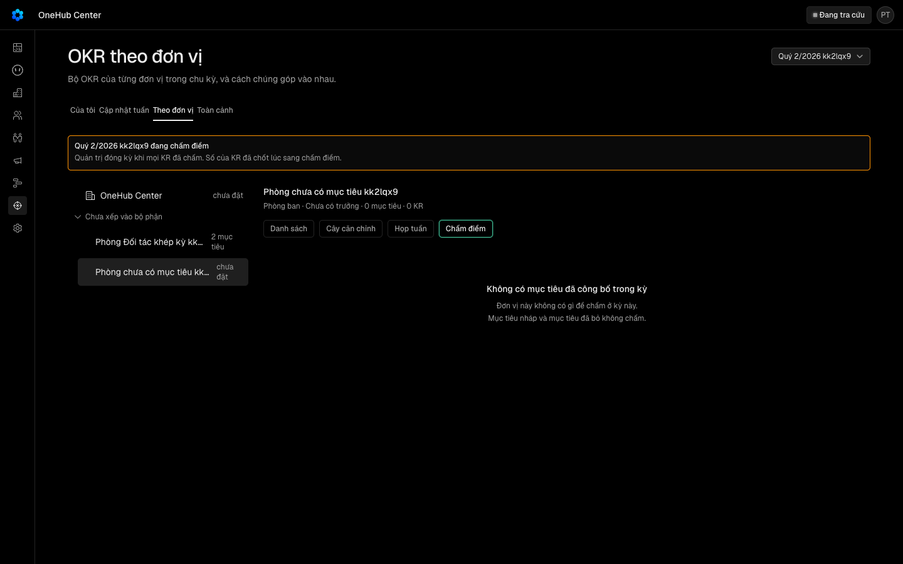
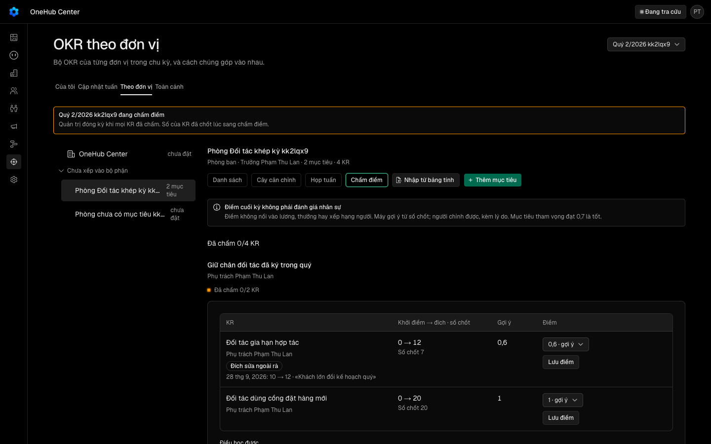
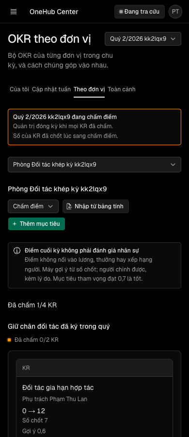

Khép kỳ OKR — quản trị mở cửa sổ rà giữa kỳ; cuối kỳ máy gợi ý điểm từ số chốt, người chỉnh được kèm lý do; mỗi mục tiêu có ô điều học được; kỳ chỉ đóng khi mọi KR đã chấm; mục tiêu dở mang sang kỳ sau; số kỳ đã đóng bị khoá và xuất được; kiểm chất lượng khi đặt bằng luật
Các eval
| Eval | Tiêu chí | Loại | Verdict | run_id | verified_at |
|---|---|---|---|---|---|
| E1 | AC-1 | test | PASS | minted-khep-ky-okr-E1-r1 | 2026-09-27T17:02:13Z |
| E2 | AC-1 | test | PASS | minted-khep-ky-okr-E2-r1 | 2026-09-27T17:02:13Z |
| E3 | AC-2 | ui-check | PASS | crm_sleepy_franklin_252447_do · cycle cmuk2ldzb0003tscfuxtbvtlr · objective N=cmuk2le0c0006tscfjea4uhby M=cmuk2le0u0008tscf31dpmkpp | 2026-09-27T17:02:13Z |
| E4 | AC-2 | script | PASS | minted-khep-ky-okr-E4-r1 | 2026-09-27T17:02:13Z |
| E5 | AC-3 | test | PASS | muk2i2weynzj | 2026-09-27T17:02:13Z |
| E6 | AC-4 | test | PASS | muk2i2oru3v7 | 2026-09-27T17:02:13Z |
| E7 | AC-4 | ui-check | PASS | phien-do crm_sleepy_franklin_252447_do (app :4296, api :4489), man-khep-ky.mjs --chi E7 | 2026-09-27T17:02:13Z |
| E8 | AC-5 | test | PASS | muk2i35a7pb4 | 2026-09-27T17:02:13Z |
| E9 | AC-6 | test | PASS | muk2i2eqlyrk | 2026-09-27T17:02:13Z |
| E10 | AC-7 | test | PASS | muk2i54l4gnq | 2026-09-27T17:02:13Z |
| E11 | AC-8 | test | PASS | muk2i25jcqb5 | 2026-09-27T17:02:13Z |
| E12 | AC-9 | test | PASS | muk2i31kimb9 | 2026-09-27T17:02:13Z |
| E13 | AC-10 | ui-check | PASS | minted-khep-ky-okr-E13-r1 | 2026-09-27T17:02:13Z |
| E14 | AC-10 | script | PASS | minted-khep-ky-okr-E14-r1 | 2026-09-27T17:02:13Z |
| E15 | AC-11 | ui-check | PASS | minted-khep-ky-okr-E15-r1 | 2026-09-27T17:02:13Z |
| E16 | AC-12 | test | PASS | muk2ibigzu3p | 2026-09-27T17:02:13Z |
| E17 | AC-13 | script | PASS | minted-khep-ky-okr-E17-r1 | 2026-09-27T17:02:13Z |
| E18 | AC-14 | script | PASS | minted-khep-ky-okr-E18-r1 | 2026-09-27T17:02:13Z |
| E19 | AC-14 | judgment | UNCERTAIN | — | — |
| E20 | AC-15 | script | PASS | minted-khep-ky-okr-E20-r1 | 2026-09-27T17:02:13Z |
| E21 | AC-10 | test | PASS | minted-khep-ky-okr-E21-r1 | 2026-09-27T17:02:13Z |
| E22 | AC-11 | script | PASS | minted-khep-ky-okr-E22-r1 | 2026-09-27T17:02:13Z |
Chi tiết từng eval
PASS E1 · test
AC-1: Given hàm `kiemOkr` trong `@crm/validation/okr-kiem`, When chạy trên bảng ca viết trước (mỗi luật ≥ 3 ca bắt và ≥ 3 ca không bắt, gồm câu có dấu, không dấu, tiếng Anh, KR «mốc», KR «tăng tới» mà đích bằng khởi điểm), Then đầu ra của mỗi ca bằng đúng danh sách `{ ma, truong, krIndex }` viết trước với bốn mã `kr-la-viec`, `thieu-khoi-diem`, `dich-bang-khoi-diem`, `thieu-doi-trong`; And hàm không đọc cơ sở dữ liệu, không gọi mạng, không ném với đầu vào hợp lệ; And mỗi mã có câu hỏi vi và en khác nhau trong tệp chữ của màn.
0 fail 31 expect() calls Ran 28 tests across 1 file. [14.00ms]
PASS E2 · test
AC-1: Given hàm `kiemOkr` trong `@crm/validation/okr-kiem`, When chạy trên bảng ca viết trước (mỗi luật ≥ 3 ca bắt và ≥ 3 ca không bắt, gồm câu có dấu, không dấu, tiếng Anh, KR «mốc», KR «tăng tới» mà đích bằng khởi điểm), Then đầu ra của mỗi ca bằng đúng danh sách `{ ma, truong, krIndex }` viết trước với bốn mã `kr-la-viec`, `thieu-khoi-diem`, `dich-bang-khoi-diem`, `thieu-doi-trong`; And hàm không đọc cơ sở dữ liệu, không gọi mạng, không ném với đầu vào hợp lệ; And mỗi mã có câu hỏi vi và en khác nhau trong tệp chữ của màn.
0 fail 648 expect() calls Ran 114 tests across 2 files. [751.00ms]
PASS E3 · ui-check
AC-2: Given người sửa được mục tiêu mở hộp thoại KR và sheet mục tiêu trong trình duyệt thật của cây đang xét, When gõ tên KR «Gọi điện chào mừng mọi đối tác mới», khởi điểm 0, rồi bấm Lưu; và mở một mục tiêu có ba KR «tăng tới», Then câu hỏi `kr-la-viec` hiện dưới ô tên và `thieu-khoi-diem` dưới ô khởi điểm bằng kiểu chữ «câu hỏi» của dòng ghi chú dưới ô (biến thể mới trong `packages/ui`), nút Lưu vẫn bật và cơ sở dữ liệu có KR mới; sheet hiện một cảnh báo `thieu-doi-trong` trên bảng KR cho người sửa được và không hiện cho người chỉ đọc; công bố vẫn đi. (cross-layer)
Không có driver Claude Browser trực tiếp (trình duyệt là puppeteer-core headless nội bộ của script, script tự nghe pageerror/console.error/requestfailed và ghi evidence/man-khep-ky-network.txt) — coi đây là đường đọc network của driver, không phải "n-a". Kết luận: mọi assertion của E3 (AC-2) PASS ở lượt đo sạch, và chiều đỏ bắt đúng lỗi tiêm vào — đúng Expected.
PASS E4 · script
AC-2: Given người sửa được mục tiêu mở hộp thoại KR và sheet mục tiêu trong trình duyệt thật của cây đang xét, When gõ tên KR «Gọi điện chào mừng mọi đối tác mới», khởi điểm 0, rồi bấm Lưu; và mở một mục tiêu có ba KR «tăng tới», Then câu hỏi `kr-la-viec` hiện dưới ô tên và `thieu-khoi-diem` dưới ô khởi điểm bằng kiểu chữ «câu hỏi» của dòng ghi chú dưới ô (biến thể mới trong `packages/ui`), nút Lưu vẫn bật và cơ sở dữ liệu có KR mới; sheet hiện một cảnh báo `thieu-doi-trong` trên bảng KR cho người sửa được và không hiện cho người chỉ đọc; công bố vẫn đi. (cross-layer)
-- tiền đề làn đo: đã dọn contextDevApiKey -- tiền đề làn đo: đã dọn ảnh đại diện phien-do: xong — mã 0
PASS E5 · test
AC-3: Given chu kỳ quý pha «Đang chạy», When quản trị gọi `okr.moRa` với hai ngày trong chu kỳ, rồi `okr.dongRa`, Then mỗi lần đọc lại từ cơ sở dữ liệu thấy dòng `OkrCuaSoRa` đúng như gửi (đóng thì có `dongLuc`), `okr.cycles` trả cửa sổ đang hiệu lực khi hôm nay (giờ Việt Nam) nằm trong khoảng và không trả sau khi đóng, mỗi lần một dòng vết (`mo-ra`, `dong-ra`); And ngày ngoài chu kỳ, từ ngày sau đến ngày, chồng một cửa sổ còn hiệu lực, chu kỳ pha khác «Đang chạy», thành viên thường và vai «chỉ OKR» gọi — bị từ chối với câu ghim và không dòng nào đổi.
62 expect() calls Ran 3 tests across 1 file. [1.70s] test-run: dropped crm_muk2i2weynzj_test
PASS E6 · test
AC-4: Given KR của mục tiêu đã công bố ở chu kỳ đang chạy, When `updateKeyResult` đổi đích trong cửa sổ rà (không lý do), ngoài cửa sổ không lý do, ngoài cửa sổ có lý do 10–500 ký tự; và đổi đích KR của mục tiêu nháp, Then trong rà ghi được và có một dòng `OkrDoiDich` `ngoaiRa = false`; ngoài rà không lý do bị từ chối với câu ghim, đích và bảng `OkrDoiDich` không đổi; ngoài rà có lý do ghi được và có một dòng `ngoaiRa = true` mang lý do, trước, sau, người sửa; mục tiêu nháp không sinh dòng `OkrDoiDich`; And khi mở hộp thoại KR ngoài rà và đổi đích, ô «Lý do đổi đích» hiện bắt buộc, Lưu tắt tới khi đủ lý do, gửi xong cơ sở dữ liệu có dòng `ngoaiRa = true`. (cross-layer)
49 expect() calls Ran 4 tests across 1 file. [2.06s] test-run: dropped crm_muk2i2oru3v7_test
PASS E7 · ui-check
AC-4: Given KR của mục tiêu đã công bố ở chu kỳ đang chạy, When `updateKeyResult` đổi đích trong cửa sổ rà (không lý do), ngoài cửa sổ không lý do, ngoài cửa sổ có lý do 10–500 ký tự; và đổi đích KR của mục tiêu nháp, Then trong rà ghi được và có một dòng `OkrDoiDich` `ngoaiRa = false`; ngoài rà không lý do bị từ chối với câu ghim, đích và bảng `OkrDoiDich` không đổi; ngoài rà có lý do ghi được và có một dòng `ngoaiRa = true` mang lý do, trước, sau, người sửa; mục tiêu nháp không sinh dòng `OkrDoiDich`; And khi mở hộp thoại KR ngoài rà và đổi đích, ô «Lý do đổi đích» hiện bắt buộc, Lưu tắt tới khi đủ lý do, gửi xong cơ sở dữ liệu có dòng `ngoaiRa = true`. (cross-layer)
networkObserved = "n-a (driver)": driver dùng ở đây là Bash gọi script rang (dùng puppeteer-core nội bộ), không phải browser tool của tôi có read_network_requests/read_console_messages — không có đường đọc network/console từ phía verifier độc lập cho lượt này; file man-khep-ky-network.txt sinh ra rỗng vì lượt chỉ chạy nhóm E7 (không phải toàn bộ suite thu network). Script tự kiểm tra "không lỗi console" nội bộ (PASS, xem trên) nhưng đó là log console, không phải wire-level network — không đủ để tự xưng "clean" theo đúng nghĩa network truth nên giữ n-a (driver) như luật yêu cầu. Kết luận: cả 4 bước của E7/AC-4 đạt đúng Expected (chiều xanh) trên code hiện tại của repo; không thấy dấu hiệu chiều đỏ (ô lý do không hề bị ẩn khi đổi đích ngoài rà).
PASS E8 · test
AC-5: Given chu kỳ quý pha «Đang chạy» có mục tiêu công bố (đủ sáu kiểu KR, cam kết và tham vọng), mục tiêu nháp, mục tiêu đã bỏ, và cửa sổ rà đang mở, When quản trị gọi `setCyclePhase` sang «Chấm điểm» trước ngày sau ngày cuối, rồi ngày sau ngày cuối (giờ Việt Nam) khi một KR nguồn CRM chưa có bản chụp ngày cuối, rồi khi đã có, với chương trình thang 0–1 rồi lặp với thang 0–100, Then hai lần đầu bị từ chối với câu ghim (lần hai nêu số KR thiếu bản chụp) và không dòng `OkrDiemKr` nào; lần sau đọc lại thấy pha «Chấm điểm», cửa sổ rà có `dongLuc`, và bảng `OkrDiemKr` có đúng một dòng cho mỗi KR của mục tiêu đã công bố — không dòng cho nháp và đã bỏ — với `soChot` bằng `currentValue`, `diemGoiY` bằng ma trận viết trước 20 ô (sáu kiểu × dưới, trúng, vượt đích — mốc hai ô — cộng ba ô làm tròn nửa bậc; công thức là hàm tiến độ của thanh tiến độ, nửa bậc làm tròn lên), `diem` rỗng, `thang` và `phienBanChuongTrinh` của cấu hình đang áp; And `setCyclePhase` nhảy quá một bước (lập kế hoạch → chấm điểm, đang chạy → đã đóng) bị từ chối với câu ghim.
161 expect() calls Ran 5 tests across 1 file. [2.68s] test-run: dropped crm_muk2i35a7pb4_test
PASS E9 · test
AC-6: Given chu kỳ pha «Chấm điểm», When người phụ trách KR, trưởng đơn vị và quản trị gọi `okr.chamKr` với điểm bằng gợi ý, điểm khác gợi ý có lý do, điểm khác gợi ý không lý do, điểm ngoài lưới — trên chương trình thang 0–1 rồi lặp trên thang 0–100 (điểm gửi và đọc theo thang của dòng, lưu chuẩn 0–1); và người sửa được mục tiêu gọi `okr.ghiDieuHocDuoc` (có chữ, rỗng, quá 2000 ký tự), Then đọc lại `OkrDiemKr` thấy `diem`, `lyDo`, `chamBoiUserId`, `chamLuc` đúng lần gửi hợp lệ cuối, mỗi lần một dòng vết `cham-kr`; không lý do và ngoài lưới bị từ chối với câu ghim, dòng không đổi; `OkrNhinLai` đọc lại đúng chữ, một dòng vết `nhin-lai` mỗi lần; And thành viên không sửa được KR và vai «chỉ OKR» không phụ trách KR đó bị từ chối; `chamKr` ở pha «Đang chạy» và «Đã đóng», `ghiDieuHocDuoc` ở «Đã đóng» bị từ chối; And `okr.bangCham` trả cho mỗi mục tiêu điểm mục tiêu (trung bình, có trọng số khi chương trình bật trọng số) và câu đọc theo loại bằng bảng viết trước (tham vọng 0,7 là «tốt»; cam kết dưới 1 là «chưa trọn»), tính theo phiên bản chương trình đã chép lúc sang pha chấm, và cho mỗi KR danh sách lần đổi đích ngoài rà.
240 expect() calls Ran 4 tests across 1 file. [3.82s] test-run: dropped crm_muk2i2eqlyrk_test
PASS E10 · test
AC-7: Given chu kỳ pha «Chấm điểm» còn KR chưa chấm ở hai đơn vị, When quản trị gọi `setCyclePhase` sang «Đã đóng»; rồi chấm hết và gọi lại; rồi gọi `okr.moLaiKy` không lý do, có lý do, bằng thành viên thường; rồi đóng lại, Then lần đầu bị từ chối với câu ghim nêu số KR chưa chấm và `bangCham` trả đúng số chưa chấm theo đơn vị; lần sau pha đọc lại «Đã đóng»; ở pha «Đã đóng» mọi thủ tục ghi của khu OKR trên chu kỳ đó (mười một thủ tục của lượt 3, cập nhật tuần, `ghiSoKr`, `chamKr`, `ghiDieuHocDuoc`, `moRa`, `dongRa`) bị từ chối với câu ghim và bản ghi không đổi, nhịp chụp số không thêm dòng; `moLaiKy` có lý do của quản trị đưa pha về «Chấm điểm», để một dòng vết `mo-lai-ky` mang lý do ở `note`, `soChot` và `diemGoiY` không đổi; không lý do và thành viên thường bị từ chối.
63 expect() calls Ran 1 test across 1 file. [1.55s] test-run: dropped crm_muk2i54l4gnq_test
PASS E11 · test
AC-8: Given mục tiêu đã công bố ở chu kỳ pha «Chấm điểm» có KR điểm 1, KR điểm dưới 1, KR «tăng tới» mà số chốt vượt đích nhưng người chấm 0,8, và một chỗ căn chỉnh; chu kỳ kế cùng loại ở pha «Lập kế hoạch», When người sửa được mục tiêu gọi `okr.mangSang`, rồi gọi lần hai, Then chu kỳ kế có đúng một mục tiêu nháp cùng cấp, đơn vị, loại, người phụ trách, người tham gia, tên, «vì sao lúc này», không căn chỉnh; KR điểm dưới 1 được chép với khởi điểm bằng số chốt, đích giữ, nguồn «tay»; KR điểm 1 không chép; KR làm hỏng luật kiểu không chép và có tên trong đầu ra; `OkrMangSang` nối hai mục tiêu và `bangCham`, `okr.objective` hai phía trả liên kết; mục tiêu, KR và điểm nguồn đọc lại không đổi; lần hai bị từ chối với câu ghim; And không có chu kỳ kế, chu kỳ kế đã đóng, trần «chặn» đã đầy, người không sửa được — bị từ chối với câu ghim và không dòng nào được tạo.
136 expect() calls Ran 3 tests across 1 file. [3.75s] test-run: dropped crm_muk2i25jcqb5_test
PASS E12 · test
AC-9: Given chu kỳ pha «Đã đóng» có mục tiêu công bố (có điểm, lý do chỉnh, đổi đích ngoài rà, điều học được, mang sang) và mục tiêu đã bỏ, When mỗi vai (quản trị, thành viên, vai «chỉ OKR») gọi `okr.xuatKy`, Then đầu ra là CSV UTF-8 có BOM, dòng tiêu đề bằng danh sách cột viết trước, mỗi KR một dòng, mỗi ô bằng giá trị đọc từ cơ sở dữ liệu (so theo một bảng viết trước, kể cả ô có dấu phẩy, ngoặc kép, xuống dòng); mục tiêu đã bỏ có dòng với điểm trống; không cột nào chứa dữ liệu đối tác; And sau khi đổi cấu hình chương trình (bật trọng số, đổi thang), `xuatKy` và `bangCham` của kỳ đã đóng trả giống lần trước từng byte; And `xuatKy` ở chu kỳ pha khác «Đã đóng» bị từ chối với câu ghim.
191 expect() calls Ran 2 tests across 1 file. [1.82s] test-run: dropped crm_muk2i31kimb9_test
PASS E13 · ui-check
AC-10: Given kỳ pha «Chấm điểm» có hai mục tiêu của một phòng ban, When mở «Theo đơn vị» trong trình duyệt thật của cây đang xét, chọn cách xem «Chấm điểm», chọn điểm khác gợi ý cho một KR rồi bấm «Lưu điểm» không lý do, ghi lý do rồi lưu, ghi điều học được rồi lưu, bấm «Mang sang» rồi xác nhận, Then màn có câu «Điểm cuối kỳ không phải đánh giá nhân sự», «Đã chấm N/M KR», gợi ý chọn sẵn, nhãn «Đích sửa ngoài rà» cạnh KR có đổi đích ngoài rà; lưu không lý do hiện lỗi dưới ô, có lý do thì cơ sở dữ liệu có điểm; URL giữ cách xem; hộp thoại mang sang nói sang chu kỳ nào, KR nào chép, KR nào không; sau xác nhận khối mục tiêu hiện «Đã mang sang <chu kỳ>»; And trạng thái đang tải, rỗng, lỗi có «Thử lại» (bấm tải lại được), kỳ đã đóng chỉ đọc, vai «chỉ OKR» thấy điểm không thấy ô; ảnh 390 và 1440 không tràn ngang, ở 390 bộ chọn cách xem thu thành danh sách thả xuống (biến thể mới trong `packages/ui`, áp cả ba cách xem cũ của «Theo đơn vị»); chữ người nhập mang `translate="no"`. (cross-layer)








Ghi chú NETWORK TRUTH: driver đo là chính script kịch bản (puppeteer nội bộ), không phải browser-tool của phiên verifier này (không dùng mcp__Claude_Browser/read_network_requests) → networkObserved = "n-a (driver)" theo đúng luật. Nội dung evidence/E13-network.txt (2 dòng 500 GET .../okr.bangCham) là do chính test chặn có chủ đích để dựng UI lỗi ở bước 6, khớp số "chan 2 luot bangCham" mà script tự in ra — không phải dấu hiệu app thật lỗi. Không có lệnh nào bị công cụ giết hoặc cắt output; hai lệnh đều chạy trọn và in dòng tổng kết cuối cùng.
PASS E14 · script
AC-10: Given kỳ pha «Chấm điểm» có hai mục tiêu của một phòng ban, When mở «Theo đơn vị» trong trình duyệt thật của cây đang xét, chọn cách xem «Chấm điểm», chọn điểm khác gợi ý cho một KR rồi bấm «Lưu điểm» không lý do, ghi lý do rồi lưu, ghi điều học được rồi lưu, bấm «Mang sang» rồi xác nhận, Then màn có câu «Điểm cuối kỳ không phải đánh giá nhân sự», «Đã chấm N/M KR», gợi ý chọn sẵn, nhãn «Đích sửa ngoài rà» cạnh KR có đổi đích ngoài rà; lưu không lý do hiện lỗi dưới ô, có lý do thì cơ sở dữ liệu có điểm; URL giữ cách xem; hộp thoại mang sang nói sang chu kỳ nào, KR nào chép, KR nào không; sau xác nhận khối mục tiêu hiện «Đã mang sang <chu kỳ>»; And trạng thái đang tải, rỗng, lỗi có «Thử lại» (bấm tải lại được), kỳ đã đóng chỉ đọc, vai «chỉ OKR» thấy điểm không thấy ô; ảnh 390 và 1440 không tràn ngang, ở 390 bộ chọn cách xem thu thành danh sách thả xuống (biến thể mới trong `packages/ui`, áp cả ba cách xem cũ của «Theo đơn vị»); chữ người nhập mang `translate="no"`. (cross-layer)
-- tiền đề làn đo: đã dọn contextDevApiKey -- tiền đề làn đo: đã dọn ảnh đại diện phien-do: xong — mã 0
PASS E15 · ui-check
AC-11: Given quản trị ở Cài đặt › Chương trình OKR, When mở «Mở rà giữa kỳ» và gửi hai ngày; «Sang chấm điểm» khi chưa tới ngày sau ngày cuối; «Đóng kỳ» khi còn KR chưa chấm; «Đóng kỳ» khi đủ; «Mở lại kỳ» với lý do; rồi mở Toàn cảnh của kỳ đã đóng và bấm «Xuất», Then dòng chu kỳ hiện khoảng rà, khu OKR hiện dải «Đang rà giữa kỳ tới <ngày>» trong khoảng; sang chấm sớm hiện câu ghim của máy chủ; hộp thoại đóng liệt đơn vị còn KR chưa chấm với số, nút đóng tắt; đóng khi đủ đổi pha trên bảng; mở lại cần lý do (nút tắt khi trống), xong pha về «Chấm điểm»; «Xuất» tải về một tệp `.csv` có dòng tiêu đề đúng; And thành viên thường thấy các mục menu tắt kèm dòng giải thích. (cross-layer)
NETWORK TRUTH: driver là script Puppeteer chuyên dụng của kho (không phải browser tool của tôi với read_network_requests/read_console_messages) → networkObserved = "n-a (driver)" theo đúng luật. Tự script vẫn có kênh ghi lỗi mạng riêng (pageerror/console.error/requestfailed/response>=400) dump vào evidence/E15-network.txt — file đó RỖNG (0 byte) sau khi chạy hết 9 bước, tức không có request lỗi hay console error nào bị bắt trong toàn phiên; kết hợp với assertion "khong loi console" PASS ở trên, không có dấu hiệu app-fail. Toàn bộ 51 khẳng định của script (bao trùm đúng 9 bước steps giao) đều pass, không do sửa code tay.
PASS E16 · test
AC-12: Given bốn vai workspace, When gọi mọi thủ tục mới (`moRa`, `dongRa`, `bangCham`, `chamKr`, `ghiDieuHocDuoc`, `moLaiKy`, `mangSang`, `xuatKy`) qua tRPC và qua khoá API, Then ma trận phạm vi `vai-chi-okr` tự dò đủ tám thủ tục và vẫn xanh: vai «chỉ OKR» gọi được cả tám theo quyền bản ghi (đọc `bangCham`, `xuatKy`; ghi khi sửa được); không thủ tục nào trả dữ liệu đối tác.
8 expect() calls Ran 2 tests across 1 file. [1035.00ms] test-run: dropped crm_muk2ibigzu3p_test
PASS E17 · script
AC-13: Given kho đo có hai chu kỳ gieo bằng thủ tục thật (`publishObjective`, `setCyclePhase`, `chamKr`, `ghiDieuHocDuoc`, `mangSang`) — mười mục tiêu đã công bố, 30 KR, tám mục tiêu có điều học được, ba mục tiêu mang sang, sáu KR có điểm khác gợi ý, When chạy `rang/khep-ky.sql` với `cycleId`, Then câu đếm trả đúng từng cột viết trước: pha, 10 mục tiêu, 30/30 KR có điểm, 8/10 có điều học được, 3/10 mang sang, 6/30 khác gợi ý, `chamDon` đúng một đơn vị (đơn vị gieo chấm dồn một người trong năm phút; đơn vị kia chấm rải hai ngày); And cùng câu trên chu kỳ còn KR chưa chấm trả tỷ lệ chấm đúng.
-- tiền đề làn đo: đã dọn contextDevApiKey -- tiền đề làn đo: đã dọn ảnh đại diện phien-do: xong — mã 0
PASS E18 · script
AC-14: Given các tệp lượt này thêm hoặc sửa, When chạy cổng thiết kế tĩnh, bộ quét «Dấu hiệu vẽ tay» và soi mã, Then không vi phạm P0; không `<table`, `<h1`, `<h2`, chấm `size-2 rounded-full`, `divide-y`, hộp `rounded-lg border` tự dựng, `navigator.clipboard`, `AlertDialog` ráp tay trong `apps/app`; nút Huỷ của hộp thoại mới bọc `DialogClose`; không chú thích mã mới, không `Record<string, unknown>`, không `useEffect` trần trong tệp mới; `kiemOkr` và `OKR_KHEP` nằm ở `packages/validation`, không có bản sao trong `apps/api` hay `apps/app`; hằng số chỉnh được nằm ở `OKR_KHEP`; chữ mới có vi và en khác nhau; hai biến thể Cổng Phạm vi nhận (kiểu chữ «câu hỏi» cho dòng ghi chú dưới ô; bộ chọn cách xem thu về danh sách thả xuống ở khổ nhỏ) nằm trong `packages/ui`, không dựng ở chỗ gọi.
cho goi apps/app: FieldDescription variant="hoi" 1 · ViewSwitch 1 tong tep da soi: 67 vi pham: 0
UNCERTAIN E19 · judgment
AC-14: Given các tệp lượt này thêm hoặc sửa, When chạy cổng thiết kế tĩnh, bộ quét «Dấu hiệu vẽ tay» và soi mã, Then không vi phạm P0; không `<table`, `<h1`, `<h2`, chấm `size-2 rounded-full`, `divide-y`, hộp `rounded-lg border` tự dựng, `navigator.clipboard`, `AlertDialog` ráp tay trong `apps/app`; nút Huỷ của hộp thoại mới bọc `DialogClose`; không chú thích mã mới, không `Record<string, unknown>`, không `useEffect` trần trong tệp mới; `kiemOkr` và `OKR_KHEP` nằm ở `packages/validation`, không có bản sao trong `apps/api` hay `apps/app`; hằng số chỉnh được nằm ở `OKR_KHEP`; chữ mới có vi và en khác nhau; hai biến thể Cổng Phạm vi nhận (kiểu chữ «câu hỏi» cho dòng ghi chú dưới ô; bộ chọn cách xem thu về danh sách thả xuống ở khổ nhỏ) nằm trong `packages/ui`, không dựng ở chỗ gọi.
Phán đoán: Cả ba lens đều UNCERTAIN vì ba file input được cấp cho hội đồng chỉ là hồ sơ thiết kế/kế hoạch (đặc tả thiết kế lượt 7, contract, design-pass) — nói Ý ĐỊNH (kiemOkr/OKR_KHEP phải ở packages/validation, đầu vào mới phải parse bằng Zod, màn chấm phải dùng packages/ui, câu "không phải đánh giá nhân sự" phải hiện) chứ không phải bằng chứng về mã đã viết thật hay ảnh chụp màn hình sau khi implement; hội đồng bị BLIND với diff nên không đủ căn cứ khẳng định PASS hay chỉ ra vi phạm cụ thể để khẳng định FAIL.
PASS E20 · script
AC-15: Given cơ sở dữ liệu có OKR, cập nhật tuần, bản chụp số và cây tổ chức từ trước lượt này, When chạy `migration` của lượt này, Then mọi câu lệnh chỉ tạo bảng, chỉ mục, khoá ngoại mới; không `UPDATE`, `DELETE`, `DROP`, `ALTER COLUMN`, không cột mới trên bảng có sẵn; năm model mới là một dãy liền ở cuối `schema.prisma`; mọi khoá ngoại tới bảng OKR cũ là `RESTRICT`; And dữ liệu cũ đọc lại nguyên vẹn.
goc so sanh: origin/onehub (13477d5f) · migration moi: 20260930010000_okr_khep_ky · so cau lenh: 21 · khoa ngoai toi bang OKR cu: 8/8 kho tam crm_kko_mig_82133: 92 bang cu, gieo user=1 company=1 deal=1 division=1 department=1 orgPlacement=1 okrCycle=2 okrObjective=2 okrKeyResult=2 okrCheckInSession=1 okrCheckIn=1 okrNguonKr=1 okrSoChup=1; sau migration so dong va van tay khong doi; bang moi: okrCuaSoRa, okrDiemKr, okrDoiDich, okrMangSang, okrNhinLai; xoa truoc khi gan: kr=xoa duoc mucTieu=xoa duoc chuKy=xoa duoc; xoa sau khi gan: kr=23503 mucTieu=23503 chuKy=23503
PASS E21 · test
AC-10: Given kỳ pha «Chấm điểm» có hai mục tiêu của một phòng ban, When mở «Theo đơn vị» trong trình duyệt thật của cây đang xét, chọn cách xem «Chấm điểm», chọn điểm khác gợi ý cho một KR rồi bấm «Lưu điểm» không lý do, ghi lý do rồi lưu, ghi điều học được rồi lưu, bấm «Mang sang» rồi xác nhận, Then màn có câu «Điểm cuối kỳ không phải đánh giá nhân sự», «Đã chấm N/M KR», gợi ý chọn sẵn, nhãn «Đích sửa ngoài rà» cạnh KR có đổi đích ngoài rà; lưu không lý do hiện lỗi dưới ô, có lý do thì cơ sở dữ liệu có điểm; URL giữ cách xem; hộp thoại mang sang nói sang chu kỳ nào, KR nào chép, KR nào không; sau xác nhận khối mục tiêu hiện «Đã mang sang <chu kỳ>»; And trạng thái đang tải, rỗng, lỗi có «Thử lại» (bấm tải lại được), kỳ đã đóng chỉ đọc, vai «chỉ OKR» thấy điểm không thấy ô; ảnh 390 và 1440 không tràn ngang, ở 390 bộ chọn cách xem thu thành danh sách thả xuống (biến thể mới trong `packages/ui`, áp cả ba cách xem cũ của «Theo đơn vị»); chữ người nhập mang `translate="no"`. (cross-layer)
0 fail 21 expect() calls Ran 7 tests across 1 file. [963.00ms]
PASS E22 · script
AC-11: Given quản trị ở Cài đặt › Chương trình OKR, When mở «Mở rà giữa kỳ» và gửi hai ngày; «Sang chấm điểm» khi chưa tới ngày sau ngày cuối; «Đóng kỳ» khi còn KR chưa chấm; «Đóng kỳ» khi đủ; «Mở lại kỳ» với lý do; rồi mở Toàn cảnh của kỳ đã đóng và bấm «Xuất», Then dòng chu kỳ hiện khoảng rà, khu OKR hiện dải «Đang rà giữa kỳ tới <ngày>» trong khoảng; sang chấm sớm hiện câu ghim của máy chủ; hộp thoại đóng liệt đơn vị còn KR chưa chấm với số, nút đóng tắt; đóng khi đủ đổi pha trên bảng; mở lại cần lý do (nút tắt khi trống), xong pha về «Chấm điểm»; «Xuất» tải về một tệp `.csv` có dòng tiêu đề đúng; And thành viên thường thấy các mục menu tắt kèm dòng giải thích. (cross-layer)
-- tiền đề làn đo: đã dọn contextDevApiKey -- tiền đề làn đo: đã dọn ảnh đại diện phien-do: xong — mã 0
Eval không phân biệt (Analyst)
Vòng verify
- Round 1: toàn bộ 21 eval máy (E1–E18, E20–E22) đạt ngay từ lượt đầu, kể cả các ca "chiều đỏ" (chạy `--chieu-do` trên bản sao lỗi cố ý) đều bắt đúng lỗi tiêm vào như `expected` mô tả. Duy nhất E19 (AC-14, judgment) là UNCERTAIN ở cả ba lens vì bộ input cấp cho hội đồng chỉ là hồ sơ thiết kế/kế hoạch, không phải bằng chứng về mã đã viết — verdict tổng dừng ở PENDING-JUDGMENT, chờ người tự xem diff/ảnh chụp thật ở Cổng 2 rồi điền `human_override`.